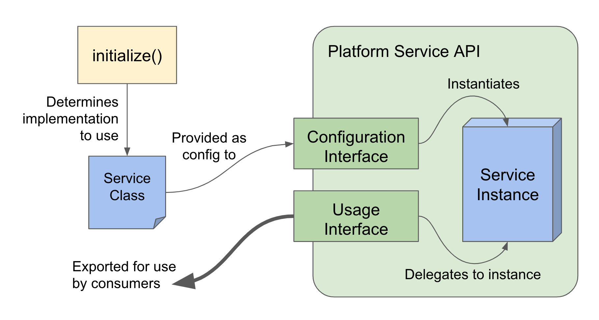

Overview
frontend-platform is a modest application framework for Open edX micro-frontend applications and their supporting libraries. It provides a number of foundational services that all Open edX micro-frontends should have:
| Service | Module location |
|---|---|
| Analytics | @edx/frontend-platform/analytics |
| Logging | @edx/frontend-platform/logging |
| Authenticated API client (auth) | @edx/frontend-platform/auth |
| Internationalization (i18n) | @edx/frontend-platform/i18n |
| Misc (init, config, pubSub, utils) | @edx/frontend-platform |
In addition, frontend-platform provides an extensible application initialization lifecycle to help manage the configuration of the above services, freeing application developers to focus on feature development.
Architecture
The four foundational services listed above (analytics, auth, i18n, and logging) are provided as imports to applications via frontend-platform's API layer. The initialization sequence creates an instance of each service and exposes its methods as functional exports, creating a layer of abstraction between service implementations and their usage in application code.
Each type of service has a documented API contract which service implementations must fulfill. This allows different service implementations to be used as necessary without updates to consuming applications.
Service architecture
Internally, service implementations are strictly isolated from the rest of the platform. They are classes that take their dependencies as arguments to their constructor. This means, for instance, if analytics depends on logging, it takes a reference to an instance fulfilling the LoggingService interface as an option when it's instantiated. It cannot import from the logging module directly. Put another way, the default service implementations may be co-located with the service interfaces for convenience, but they can theoretically live in their own repository and it wouldn't require any refactoring.
Likewise, platform code should not make use of service methods that are not part of the documented interface for the same reasons.
Application Initialization
frontend-platform provides an initialize() function which bootstraps and configures an application. The initialize() function uses a set of sensible defaults unless otherwise specified, bootstrapping the application with services reflecting Open edX's best practices around analytics, authentication, internationalization, and logging.
The initialization process proceeds in a series of phases, giving the initializing application code opportunities to hook into the process and do custom setup as desired:
- Before initialization
- Pub/Sub initialized
- Environment config document loaded
- Logging service initialized
- Authentication service initialized
- Analytics service initialized
- Internationalization service initialized
- Application ready
Most applications won't need to do anything special at all.
Application Configuration
When the application loads, a list of known environment variables is loaded from process.env into an object which it exposes via getConfig - the point here is primarily to isolate our code from usages of process.env which may not always be the way we choose to configure our apps. The application initialization lifecycle supports runtime configuration as well via the config handler, documented in the initialize function. If you want to get a variable into the config that it’s not expecting, you can use mergeConfig during initialization to add it in from process.env.
Such an example might look like:
initialize({
// ... other initialization options
handlers: {
config: () => {
mergeConfig({
CUSTOM_VARIABLE: process.env.CUSTOM_VARIABLE || null,
}, 'Custom app config');
},
},
});
Service interfaces
Each service (analytics, auth, i18n, logging) provided by frontend-platform has a API contract which all implementations of that service are guaranteed to fulfill. Applications that use frontend-platform can use its configured services via a convenient set of exported functions. An application that wants to use the service interfaces need only initialize them via the initialize() function, optionally providing custom service interfaces as desired (you probably won't need to).

Service implementations
This repository contains default service implementations for convenience. These implementations are co-located with their consuming service interfaces for ease of development, though the two should remain strictly modular and separate.
The included service implementations are:
- New Relic (logging)
- Segment (analytics)
- Axios/JWT (auth)
- React Intl (i18n)
NOTE: As of this writing, i18n is not configurable. The initialize() function does not allow applications to supply an alternate i18n implementation; this is because the interface and implementation for i18n has not yet been separated and modularized.
Testing Locally
If you want to test changes to frontend-platform against a micro-frontend locally, follow the directions here: https://github.com/edx/frontend-build#local-module-configuration-for-webpack